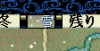
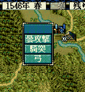

戦争中の天気を取得、設定するAPIです。
原則的に、メイン画面は天候とは無関係ですので、「戦争画面」にて使うことになるでしょう。

byte Get_天気()
if (Get_天気() == 天気::晴れ) {
デバッグ出力 << "晴天です" << endl;
} else if (Get_天気() == 天気::曇り) {
デバッグ出力 << "曇りです" << endl;
} else if (Get_天気() == 天気::雨) {
デバッグ出力 << "雨です" << endl;
} else if (Get_天気() == 天気::雪) {
デバッグ出力 << "雪です" << endl;
}
天気に応じて、攻撃コマンド名を変更する例

void カスタム::On_残りターン変更《戦争画面》(int 残りターン数) {
デバッグ出力 << "このイベントハンドラの直後に本日の天候へと変わります" << endl;
if (Get_天気() == 天気::晴れ) {
デバッグ出力 << "先程のターンは晴天でした" << endl;
}
else if (Get_天気() == 天気::曇り) {
デバッグ出力 << "先程のターンは曇りでした\x0A涼しくて士気旺盛でした" << endl;;
}
else if (Get_天気() == 天気::雨) {
デバッグ出力 << "先程のターンは雨でした\x0A潤って士気旺盛でした" << endl;
}
else if (Get_天気() == 天気::雪) {
デバッグ出力 << "先程の天候は雪でした\x0Aカッチコチでした";
}
}
void カスタム::On_ターン変更《攻城中画面》(int ターン数) {
}
void カスタム::On_戦闘コマンド表示直前《戦争画面》(int 武将番号) {
int iBushouID = 武将番号 - 1; // 武将番号→武将番号【配列用】に
if (0 <= iBushouID && iBushouID < 最大数::武将情報::配列数) {
if (p武将戸籍情報[iBushouID].顔番号 == 顔番号::武田晴信) { // 武田信玄の顔＆列伝番号
if (Get_天気() == 天気::雨) {
デバッグ出力 << "今日は晴天です" << endl;
Set_コマンド名(戦争画面::戦闘コマンド名::通常攻撃, "雨攻撃");
Set_コマンド名(戦争画面::戦闘コマンド名::一斉攻撃, "雨一斉");
}
else if (Get_天気() == 天気::晴れ) {
デバッグ出力 << "今日は晴れです" << endl;
}
else if (Get_天気() == 天気::曇り) {
デバッグ出力 << "今日は曇りです" << endl;
Set_コマンド名(戦争画面::戦闘コマンド名::通常攻撃, "曇攻撃");
Set_コマンド名(戦争画面::戦闘コマンド名::一斉攻撃, "曇一斉");
}
else if (Get_天気() == 天気::雪) {
デバッグ出力 << "今日は雪です" << endl;
Set_コマンド名(戦争画面::戦闘コマンド名::通常攻撃, "雪攻撃");
Set_コマンド名(戦争画面::戦闘コマンド名::一斉攻撃, "雪一斉");
}
}
}
}
void Set_天気予約(int i天気, int 継続ターン=2)
戦闘中にこの関数で天気を予約することで、翌日以降の天気を操作可能となる。
「戦争 - 天気」に関する主な所は以上となります。 詳しくは「天気情報型.h」や「天気情報列挙.h」などを参照してください。